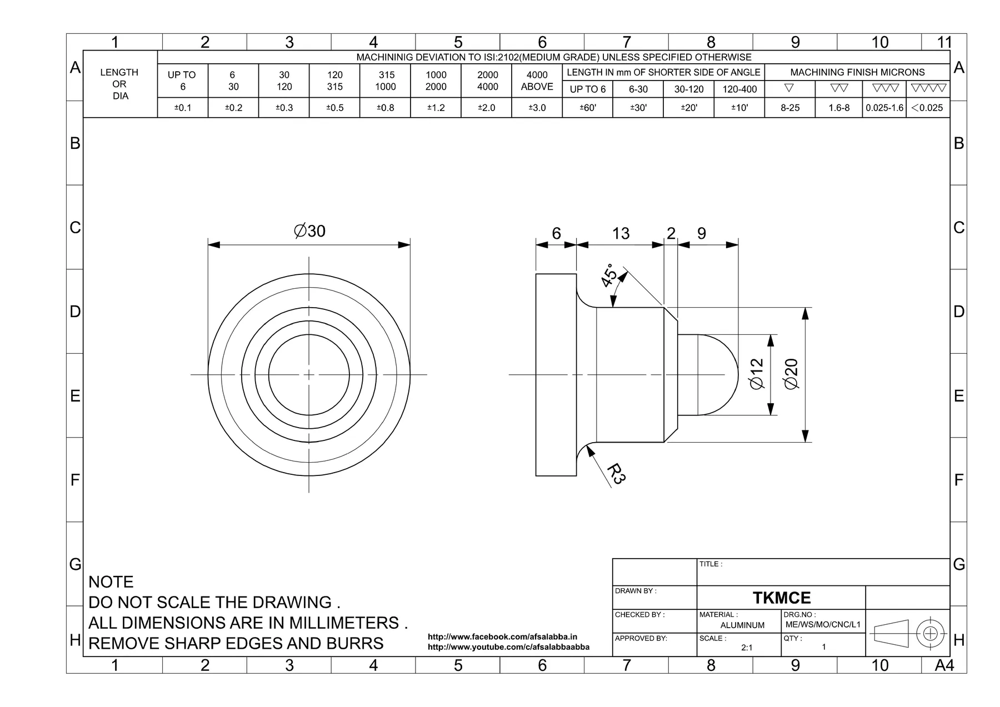

CNC Lathe Semester 6 3D ModelReset View Engineering Drawing  Resources Machining VideoYouTube Process GuidePDF Sample QuestionsPDF Model Questions & AnswersPDF Additional Information & ReferenceYouTube